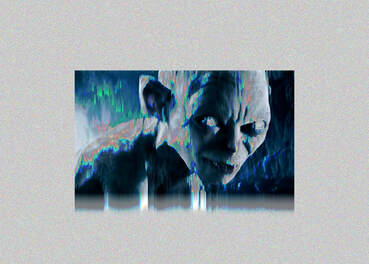

The Lord of the Rings Cursed Trio
The One Ring

Eye of Sauron

Gollum
These are three subjects that are strongly linked to one another in the film series The Lord of the Rings. The One Ring or Ring of Power has a power that is pretty much impossible to resist when one takes hold of it. The longer you have the ring, the more the power consumes you. The One Ring was first linked to Sauron, whose eye is illustrated in the second image altough you cannot see very well due to the image being broken. Gollum, who is the creature in the third image is a prime example of what happens when you do have the ring for far too long. The first two image glitches of the One Ring and the Eye of Sauron were done through means of data bending which involves copying and pasting multiple chunks of code of the image. The third glitched image of the creature Gollum was achieved through a program called Audacity using what's called the echo effect. I thought that this theme of Lord of the Rings fit nicely with glitching these images due to how the One Ring essentially "glitches" those who possess it, cursing them and changing them.